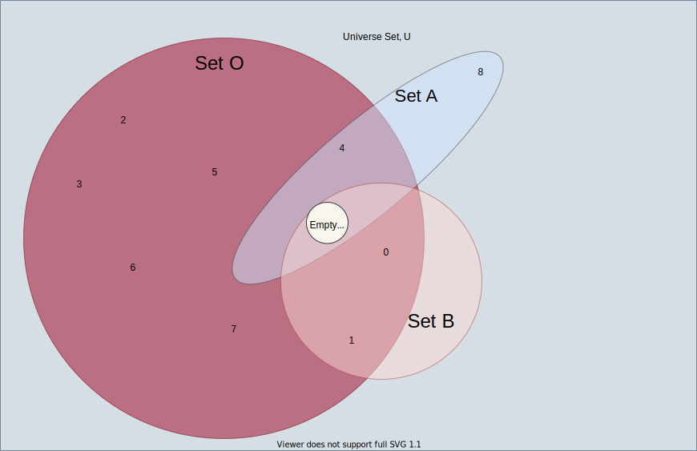

Subsets and supersets
Given a set \(S\), any collection of elements \(x\) of \(S\) is referred to as a subset \(C\) of \(S.\) As a quick reference, the set \(S = \{0, 1\}\) has 4 subsets: \(\{ \}, \{0\}, \{1\}, \{0, 1\}.\)
To denote that a set \(C\) is a subset of \(S,\) we write \(C \subseteq S.\) If there is at least one element in \(S\) that is not also in the subset \(C,\) then \(C\) is said to be a strict subset of \(S\) and the notation is then \(C \subset S.\) From our earlier small example, \(\{0\} \subset S\) and \(\{0,1\} \subseteq S.\)
Example 1: For \(Z^+ = \{0,1,2,3,4, \ldots \},\) the set of all non-negative integers, one possible subset is \(E = \{0, 2, 4, \ldots \}\). The set \(E\) is the set of positive even integers and, like the set \(Z^+,\) has a countably infinite number of elements.
Example 1 demonstrates that the size of a subset of a set can equal the size of the set itself. It is important to note that for any set, the size of a subset of the set cannot be larger than the size of the original set.

Subsets of the Universal set \(U\): set \(B\) is a subset of set \(O.\) However, set \(A\) is not a subset
of set \(O.\)
Example 2: For all sets \(S,\) the empty set is a subset of \(S\). This statement includes the case when \(S\) is the empty set, \(S = \emptyset.\)
\[\emptyset \subseteq S\]The Empty set is the smallest possible subset of any set, and sets the lower bound on the size of a subset. In general, for a set \(S\) and any subset \(C\) of \(S\) the size of \(C\) is at least 0 and no more than the size of \(S\). We refer to the size of a set \(S\) as its cardinality, denoted \(\vert S\vert\). To restate the condition of size using the term cardinality
For all subsets \(C\) of set \(S,\) \(0 \leq \vert C \vert \leq \vert S \vert\).